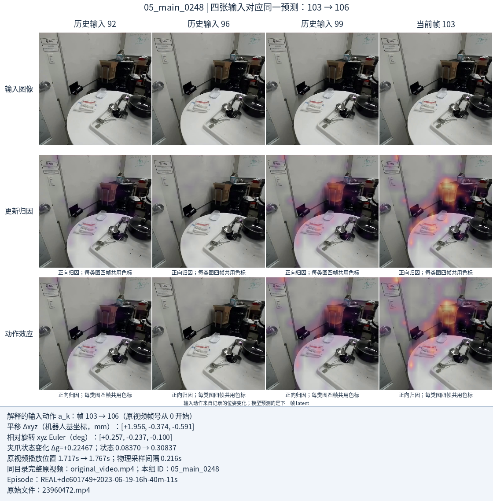
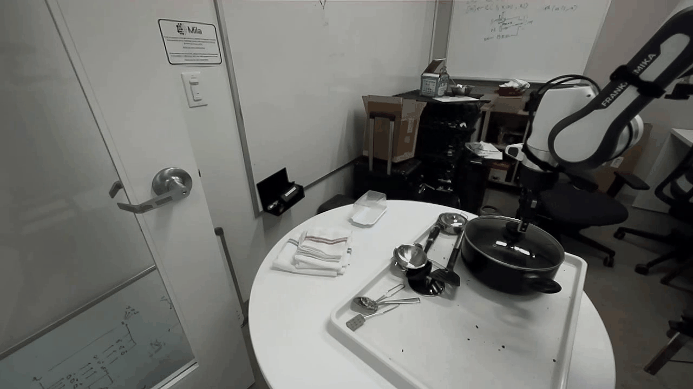
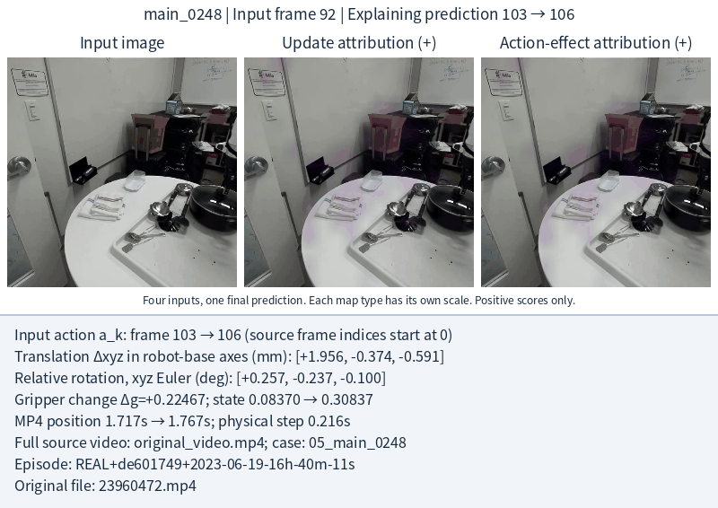

解释的输入动作 a_k：帧 103 → 106（原视频帧号从 0 开始）
平移 Δxyz（机器人基坐标，mm）：[+1.956, -0.374, -0.591]
相对旋转 xyz Euler（deg）：[+0.257, -0.237, -0.100]
夹爪状态变化 Δg=+0.22467；状态 0.08370 → 0.30837
原视频播放位置 1.717s → 1.767s；物理采样间隔 0.216s
同目录完整原视频：original_video.mp4；本组 ID：05_main_0248
Episode：REAL+de601749+2023-06-19-16h-40m-11s
原始文件：23960472.mp4


